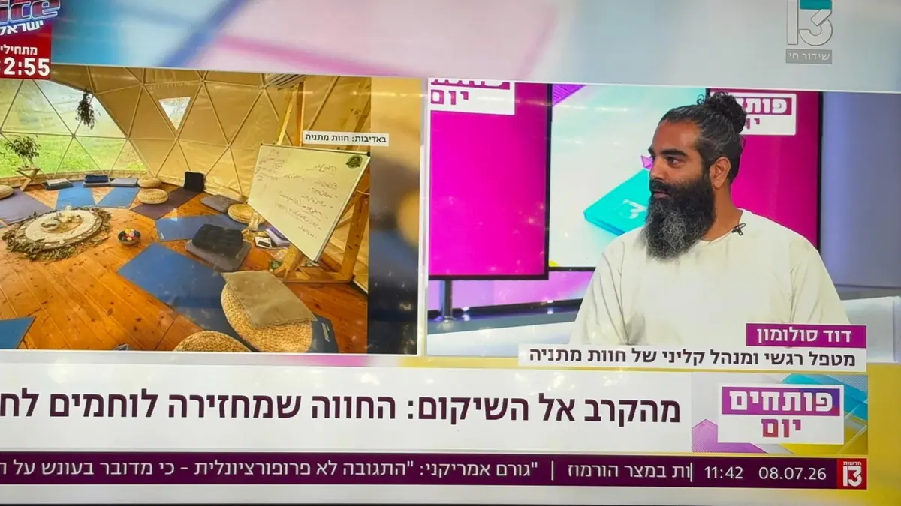
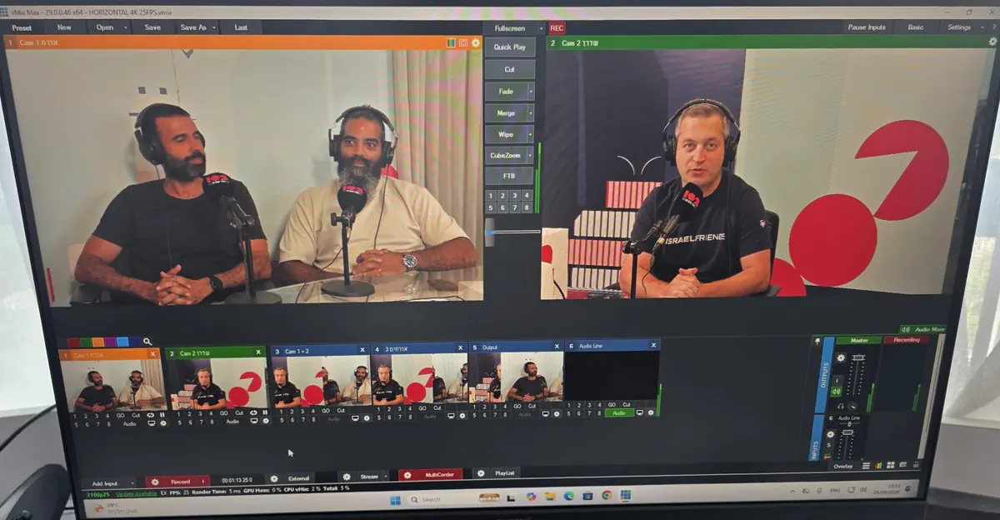
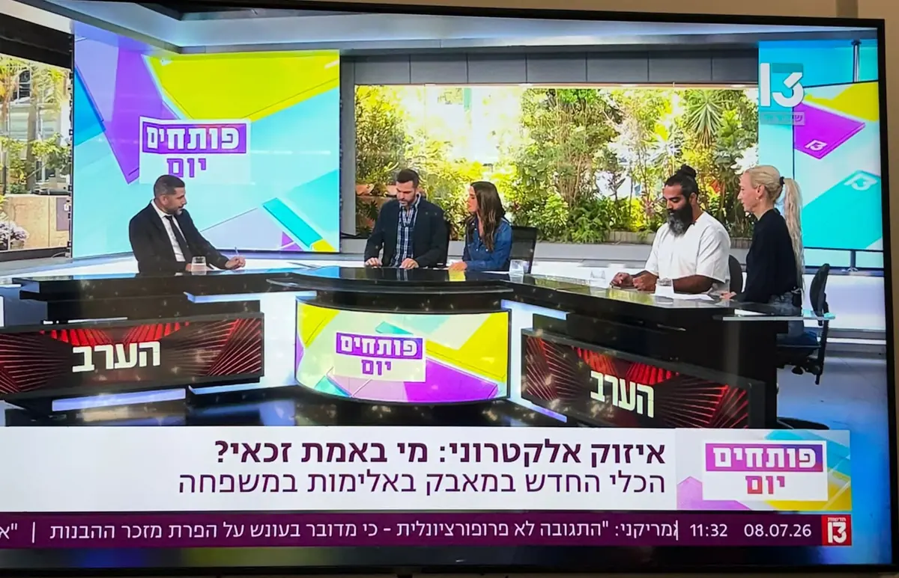
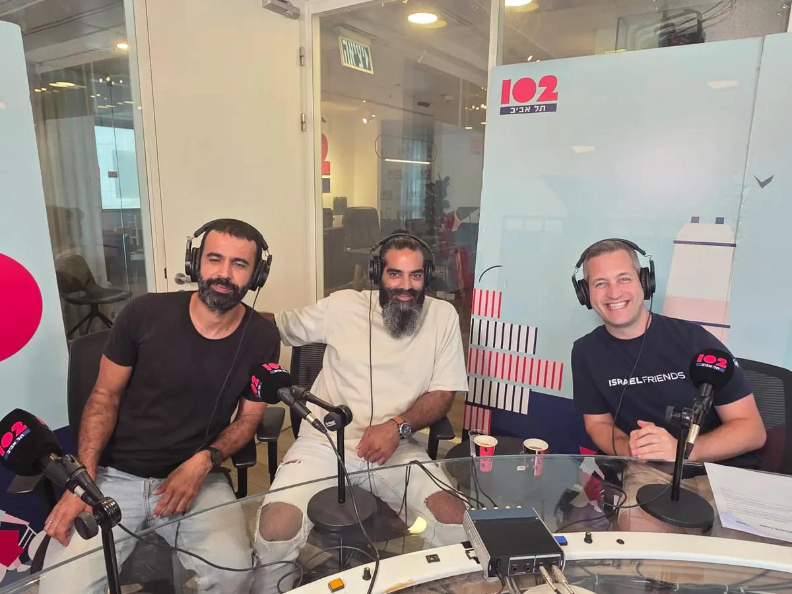

חדשות 13 · פותחים יום
מהקרב אל השיקום
כתבה על חוות מתניה והחזרה של לוחמים לחיים, עם דוד כמנהל הקליני של החווה.
פודקאסטים · סרטונים · תוכן מקצועי
כאן אפשר לשמוע איך אני חושב על טראומה, זוגיות, משפחה וחוסן — ולקחת משהו לדרך. התוכן מתעדכן באופן שוטף.

בתקשורת

חדשות 13 · פותחים יום
כתבה על חוות מתניה והחזרה של לוחמים לחיים, עם דוד כמנהל הקליני של החווה.

חדשות 13 · פותחים יום
שיחה באולפן תוכנית הבוקר של חדשות 13.

102FM · תל אביב
שיחה מוקלטת באולפן. קישור להאזנה יעלה כאן בקרוב.
ספריית תוכן
טראומה ופוסט־טראומה, חזרה ממילואים, זוגיות ומשפחה, הורות, וחוסן בארגונים.
בקרוב יופיעו כאן פודקאסטים וסרטונים, מסודרים לפי נושאים. בינתיים, אפשר תמיד לכתוב לי ולשאול.
ברשתות
ערוץ היוטיוב עם הפודקאסטים והסרטונים, ותוכן קצר באינסטגרם ובפייסבוק.
הערוצים ברשתות יעלו כאן בקרוב.
יצירת קשר
כתבו לי בוואטסאפ, התקשרו, או השאירו פרטים — ואחזור אליכם.